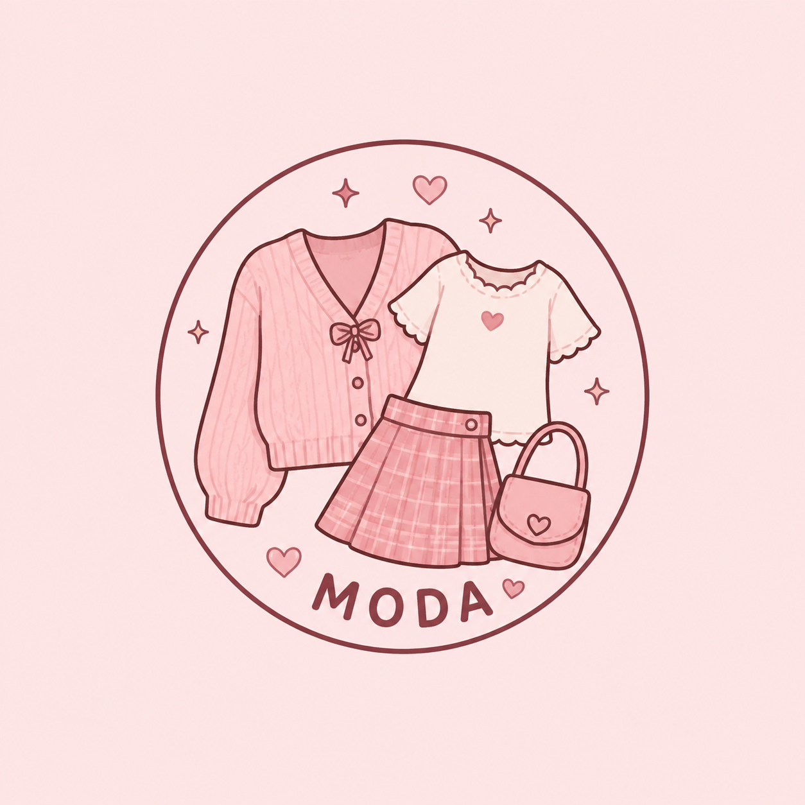

Looks fofos
Por: Giovana
A moda é uma forma de expressar a personalidade e mostrar um pouco dos nossos gostos através das roupas, cores e acessórios que escolhemos.
Os looks fofos podem ser criados com peças delicadas, como saias, blusas, cardigans e acessórios que deixam a combinação mais charmosa.